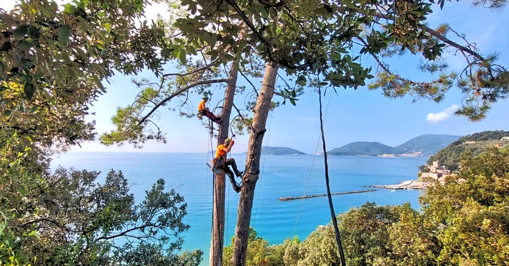
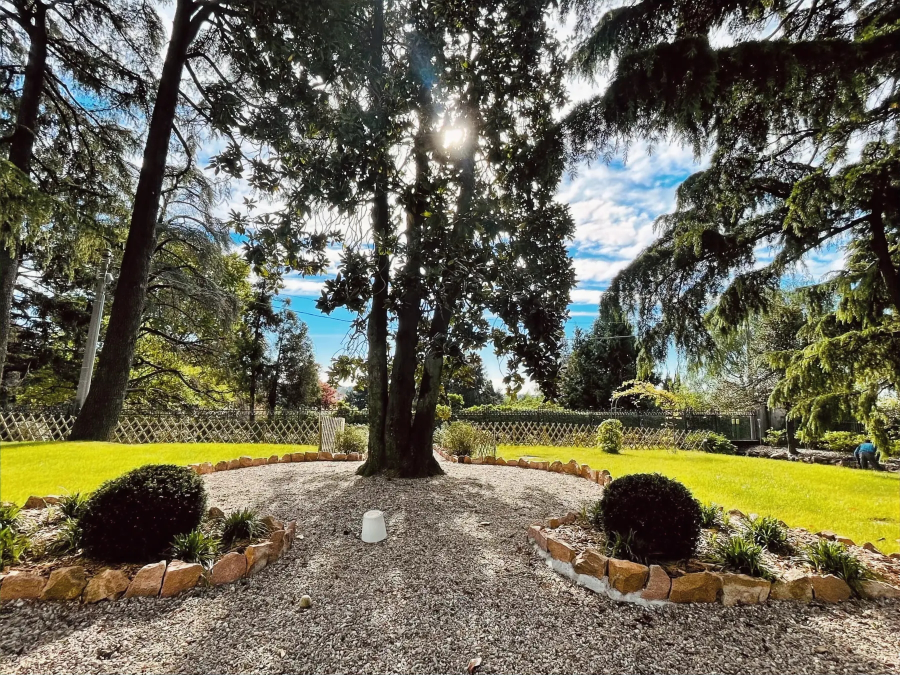
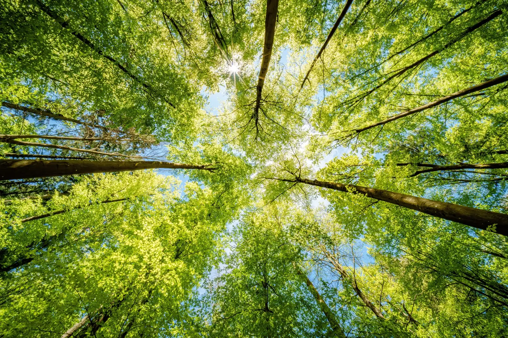

Arboricoltura e gestione del verde
Ci prendiamo cura degli alberi ad alto fusto
Dalla messa a dimora all’abbattimento controllato, per aree verdi pubbliche e private. Personale qualificato, attrezzature certificate.
Potatura in tree climbing, Samarate (VA)
Come possiamo aiutarti

Interventi sull’albero
Potatura, consolidamento, abbattimento controllato e rimozione della ceppaia, anche dove la piattaforma non arriva.
Tree climbing
Gestione dell’area verde
Manutenzione ordinaria e straordinaria, nuovi impianti, progettazione e cura programmata di parchi e giardini.
ServiziCome lavoriamo
Soluzioni su misura per far crescere il tuo verde
Esperti nella cura del verde, con uno sguardo attento alla natura e un approccio sostenibile che rispetta i ritmi delle piante, le esigenze del paesaggio e quelle delle persone.
-
Prima si legge l’albero
Ogni intervento parte da una valutazione dello stato fitosanitario e strutturale. Si taglia solo quello che serve, nel momento giusto dell’anno.
-
Poi si sceglie la tecnica
Tree climbing, piattaforma o abbattimento sezionato: la tecnica dipende dall’accesso, dallo spazio di caduta e dal rischio per cose e persone.
-
Infine si lascia il cantiere pulito
Smaltimento del materiale di risulta secondo le normative vigenti, con ripristino dell’area e documentazione dell’intervento.
Servizi
Scopri tutti i nostri servizi
Dalla singola potatura al contratto di manutenzione programmata.
Il treeclimbing è una tecnica professionale di arrampicata sugli alberi utilizzata per la potatura, la manutenzione e la cura di esemplari di grandi dimensioni.
02 Abbattimento controllatoL’abbattimento controllato permette di smontare l’albero in sezioni gestibili, riducendo al minimo il rischio di danni.
03 Fresatura ceppaieLa fresatura dei ceppi è un intervento specialistico che permette di rimuovere in modo efficace e sicuro le ceppaie degli alberi abbattuti.
04 Potatura e consolidamento alberature ad alto fustoUna potatura ben eseguita ha l’obiettivo di preservare la forma naturale della pianta, salvaguardandone la salute e andando a ridurre al minimo gli interventi invasivi.
05 Progettazione e realizzazione giardiniIl nostro servizio di costruzione giardini nasce con l’obiettivo di trasformare ogni spazio esterno in un progetto su misura, pensato per rispondere alle vostre esigenze estetiche, funzionali ed ecologiche.
06 Manutenzione ordinaria e straordinaria di aree verdiUna manutenzione attenta e regolare è fondamentale per preservare nel tempo l’equilibrio, la bellezza e la funzionalità del progetto originario del giardino.
07 Installazione e manutenzione impianti di irrigazioneUn sistema di irrigazione ben progettato è essenziale per garantire la salute e la crescita equilibrata di qualsiasi spazio verde, ottimizzando l’uso dell’acqua e riducendo gli sprechi.
08 Trattamenti fitosanitari e cura delle piantePer le piante meno vigorose offriamo interventi mirati di cura, trattamenti fitosanitari e concimazione, nel pieno rispetto dell’ambiente e della normativa vigente.

“Il momento migliore per piantare un albero è vent’anni fa. Il secondo momento migliore è adesso.”
Garanzia di professionalità
Le nostre certificazioni sono la garanzia di un lavoro svolto con competenza, sicurezza e rispetto per l’ambiente
Dicono di noi
Chi ci ha affidato i propri alberi
Tre voci fra aziende, amministratori di condominio e privati.
Sezione in attesa dei testi reali: il cliente deve ancora raccogliere le recensioni. Sotto, solo la struttura.
Testo della recensione, due o tre righe. Meglio se cita l’intervento specifico e il problema risolto.
Testo della recensione, due o tre righe. Meglio se cita l’intervento specifico e il problema risolto.
Testo della recensione, due o tre righe. Meglio se cita l’intervento specifico e il problema risolto.
Perché ogni spazio verde merita cura, attenzione e professionalità
Raccontaci di cosa hai bisogno: ti ricontattiamo per un sopralluogo e un preventivo dettagliato.